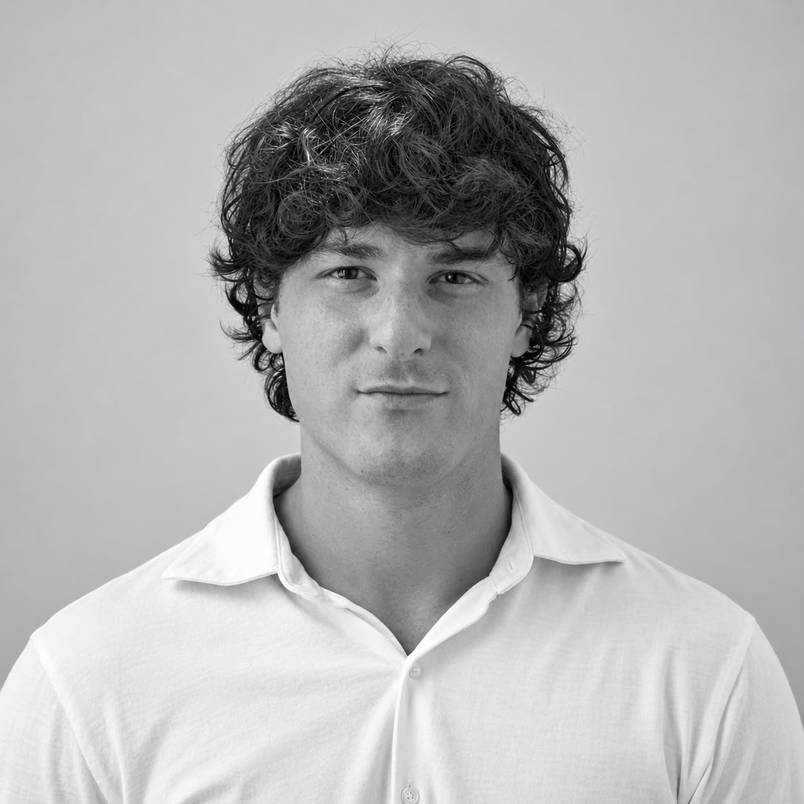

Deep learning
Weather-Aware PV Forecasting
An encoder-decoder LSTM predicts photovoltaic power using historical production, solar features and weather covariates.
Explore projectGabriele Ciccolella / Rome, Italy
AI & Machine Learning.
Backed by hands-on software engineering.
MSc graduate in Intelligent Systems Engineering, 110/110 cum laude. I build models, connect services and explore the security of quantum communications.

01 / Selected work
Deep learning
An encoder-decoder LSTM predicts photovoltaic power using historical production, solar features and weather covariates.
Explore projectMaster's thesis
An eight-microservice simulation platform for exploring how loss, noise and interception affect a BB84 session.
Explore project02 / Machine learning
From movement recognition to building damage prediction: prepare the data, compare models and examine the evidence.
Comparing tree-based models and an ensemble to classify building damage after the Nepal earthquake.
02 / Bachelor's thesisA comparative study of supervised learning models for recognising rehabilitation exercises from movement data.
03 / Medical dataA manual K-nearest neighbours implementation for benign versus malignant cell classification.
03 / About me
I am interested in how intelligent models become useful software, and how that software can be made understandable, testable and secure.
Università Campus Bio-Medico di Roma
110/110 cum laudeUniversità Campus Bio-Medico di Roma
104/110Chess: three-time university tournament finalist.
Competitive football: S.S. Lazio.
Let's connect
I am exploring junior opportunities in AI, machine learning, software engineering and cybersecurity in Rome.
Start a conversation